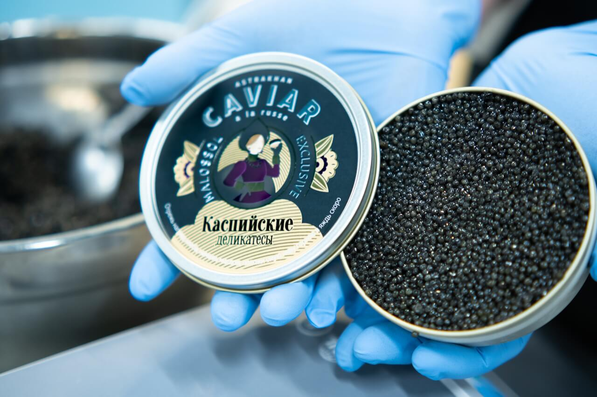

Икра белуги — самая крупная и дорогая. Цвет от светло-серого до тёмного..jpg) Икра осётра — золотистая или тёмно-коричневая. Самая распространённая среди чёрной икры.
Икра осётра — золотистая или тёмно-коричневая. Самая распространённая среди чёрной икры.
.jpg) Красная икра — добывается из лососёвых рыб. Имеет ярко-оранжевый или красный цвет.
Красная икра — добывается из лососёвых рыб. Имеет ярко-оранжевый или красный цвет.